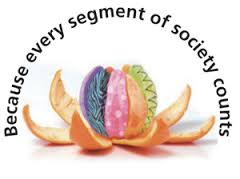

Lately there have been a number of kerfuffles in the tech sector that have highlighted the industry's lack of valuing and respecting the diversity within: GitHub had a rather public issue with sexism; Mozilla's CEO stepped down due to his stance (of non-support) on marriage equality; RadiumOne's CEO and Chairman avoided jail and managed to get 45 felony charges dropped (battery of a partner.) There are a variety of other charming instances that one could highlight that would further exemplify the lack of - one may argue humanity - withing the sector.
Addressing the multitude of gender inequality incidents of late nine women with fairly prominent positions in Tech published an open letter to the industry entitled An Open Letter on Feminism In Tech which lays out the variety of ways in which devaluing women is the accepted norm within the sector. Perhaps the most blatant of all - gender inequality - is a pervasive problem that has not, despite some honest efforts in various areas, seemingly improved in the past few decades... well, really ever. Unlike other industries where gender inequality is mostly "just" a question of pay inequality the culture of "brogramming" within Tech takes sexism to new heights.
Brogrammer (Urban Dictionary): A programmer who breaks the usual expectations of quiet nerdiness and opts instead for the usual trappings of a frat-boy: popped collars, bad beer, and calling everybody "bro". Despised by everyone, especially other programmers.
The homophobic issue is, at times, a more subtle one - oftentimes because being gay (unlike being female) isn't always obvious. A recent HuffPo article laid out the almost concurrent issues of Brendan Eich's homophobic stance and the L.A. Clippers' Don Sterling's racist one. In what was an interesting turn of events the NBA took (almost) immediate sanctions against Sterling while Mozilla did nothing with Eich. Eich, I believe, just happened to be caught in the recent turning of the tide on the marriage equality front and the free market had enough muscle to force him out. Were his appointment to have happened a year or three ago he may well still be the company's CEO. While one hopes this bodes well for gay rights I'm still quite skeptical that the tide has turned for this segment of the population - never mind within tech with it's "brogrammer" culture.
Because a more inclusive Tech community means that the products they're producing by extension are more inclusive makes this a pivotal area for the industry to address. The rise of brogrammer culture is disturbing to say the least and with its continued rise in popularity it's merely a matter of time before the slight downward trend on the gender equality front (measured by the simple metric of percentage of women in programmer/developer/engineer positions) becomes a flat out exodus.
It's really up to you. Fortunately I'm enrolled at an coding school that has chosen to deliberately focus on Engineering Empathy. But at the end of the day it's up to each individual in the workplace - regardless of sector - to make a difference. I jut believe that this is the most important challenge facing tech at this time and I hope that I can help be an instrument of change in as much by what I don't do as by what I do. (No problem of my ever trying to emulate a brogrammer but there are plenty of ways I am sure I can/need/will work on myself that will hopefully have a positive impact on my surroundings - including my professional ones.)